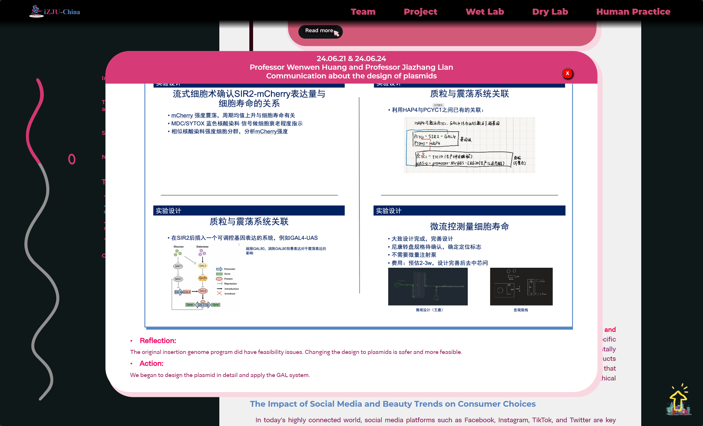
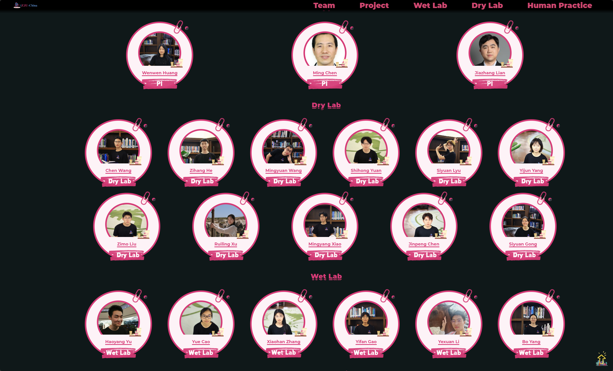
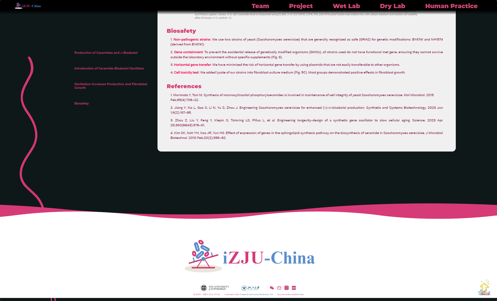
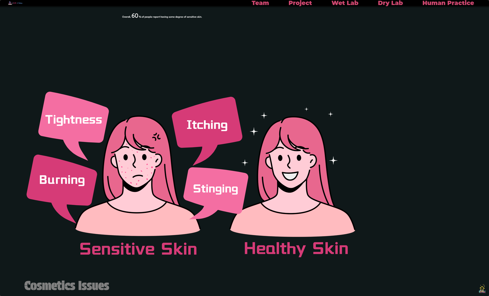

概述
真正开始理解前端结构的一次项目
这是我第一次把一个“看起来很厉害的网站”拆成自己能够一步步执行的结构。它让我开始真正理解页面复现、参考迁移和前端结构，而不只是停留在表面效果。
我负责了除首页之外的大部分页面制作，后期也参与处理了首页层面的技术问题。虽然表面上依赖的是 HTML、CSS 和 JavaScript，但真正困难的部分其实是怎么把它们组织成能持续修改和维护的页面结构。
计算机项目 / 前端
一个以前端实现为主的团队项目，重点在内页制作、HTML/CSS/JS 落地，以及把参考效果真正翻译成稳定可用的页面。
概述
这是我第一次把一个“看起来很厉害的网站”拆成自己能够一步步执行的结构。它让我开始真正理解页面复现、参考迁移和前端结构，而不只是停留在表面效果。
我负责了除首页之外的大部分页面制作，后期也参与处理了首页层面的技术问题。虽然表面上依赖的是 HTML、CSS 和 JavaScript，但真正困难的部分其实是怎么把它们组织成能持续修改和维护的页面结构。
我学到了什么
一开始我还是把网站当成一种黑箱。虽然能在模板里挖出某个卡片或局部效果，但经常做到了“复现”，却完全做不到“改好”。这个项目真正改变我的，是我开始理解结构在哪里、CSS 应该去哪里改、交互逻辑又是怎么依附在布局上的。
等我把导航和首页一些关键交互问题做通之后，静态页面终于不再像魔法一样难懂，而变成了一套可以阅读、可以定位、可以调整的系统。这种理解带来的信心，比任何单个视觉效果都更重要。
项目反思
这个项目逼着我在真实的节奏里学习：有截止时间、有队友、有肉眼可见的结果。我必须从零散教程里跳出来，进入真正的决策过程。回头看，最有价值的并不是网站最后长什么样，而是我不再把实现当成“猜”，而是开始把它当成一个可以被拆开和解决的工程问题。
主界面

最能代表这个项目视觉语言的一张主界面截图。
内页结构

展示我主要负责的内页结构与模块设计的一张截图。
更多页面



补充展示其他页面，帮助理解整站的统一结构与视觉延续。